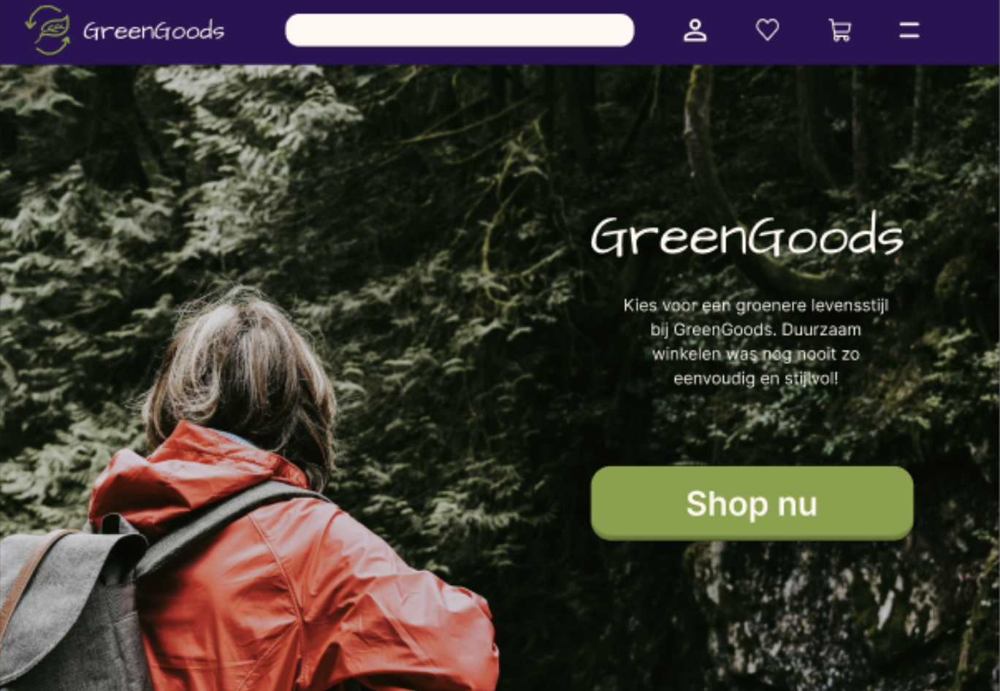
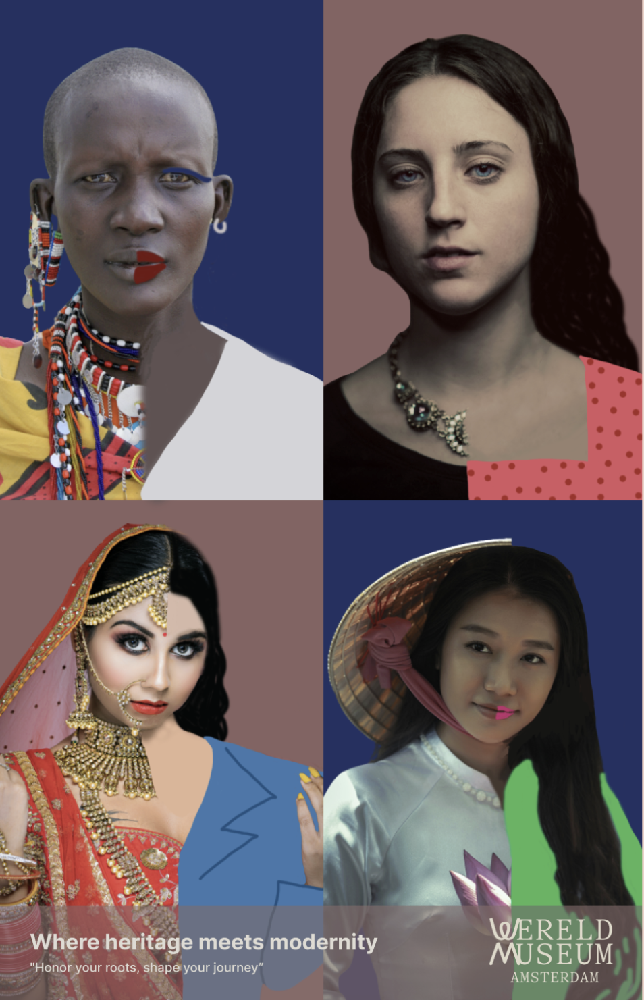
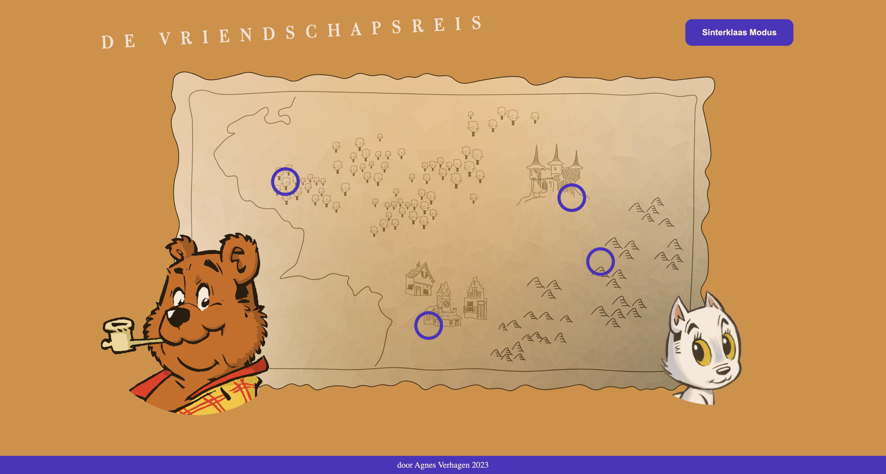
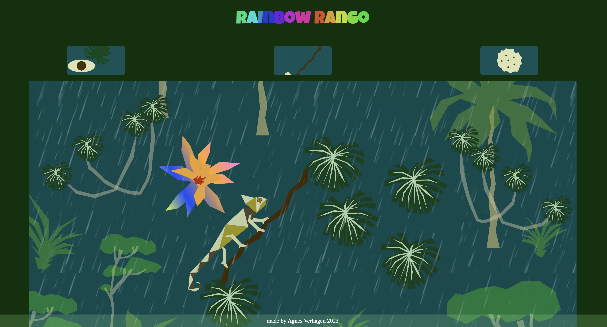
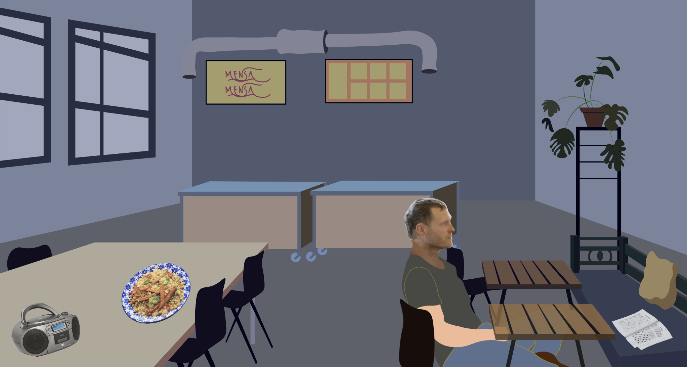

Overzicht vakken minor VID
Van sept 2023 tot eind jan 2024 heb ik de minor Visual Interface Design gevolgd voor de studie CMD aan de HvA. Deze minor bestond uit diverse vakken:
Neem gerust een kijkje hieronder om te zien wat ik heb gemaakt.
-

Grid & kleur
Voor deze opdracht heb ik een prototype ontwikkeld in Figma voor een webshop met duurzame beautyproducten. In het ontwerp heb ik gefocust op een consistente layout en een zorgvuldig gebruik van kleur, grids, beeldmateriaal en typografische hiërarchie. Om de toegankelijkheid en leesbaarheid te garanderen, heb ik de kleurcontrasten van tekst op buttons en allerlei achtergronden gecontroleerd. Daarnaast heb ik gezocht naar een balans tussen witruimte en interface-elementen voor een overzichtelijk geheel. Aangezien dit mijn eerste ervaring met Figma was, ben ik er trots op dat ik in korte tijd beginnend vaardig ben geworden en een professioneel resultaat heb geleverd.
-

Typografie
Voor het vak Typografie heb ik twee opdrachten uitgevoerd. De eerste opdracht bestond uit het ontwerpen van een analoge poster (zie Miro bord.). Het doel was om een vierletterwoord te visualiseren in een specifiek lettertype, waarbij de betekenis van het woord en de grafische stijl strak moesten aansluiten bij het font. Ik koos voor het woord 'Gate' in het lettertype Eccentric. Om de sierlijke, langgerekte vormen van dit font te benadrukken, heb ik de letters handmatig vormgegeven en gecombineerd met een getekende poort op de achtergrond. Voor de tweede opdracht heb ik het font Eccentric digitaal gepresenteerd. Hierbij lag de focus op een sterke visuele vertaling door middel van praktijkvoorbeelden, tekstuele analyses en animaties, om zo het unieke lettertype tot zijn recht te laten komen.
-

Beeldtaal
Voor het vak Beeldtaal heb ik drie opdrachten uitgevoerd. In de eerste opdracht heb ik drie visuals gemaakt waarin hetzelfde voorwerp steeds in een andere context is geplaatst. Voor de tweede opdracht heb ik een bestaande poster geanalyseerd op basis van semantiek, retorica en de Gestaltwetten. Vervolgens heb ik deze poster zelf aangepast om de boodschap sterker over te laten komen. Als laatste opdracht heb ik een poster ontworpen met als thema 'roots'. Hiermee wil ik mensen aanmoedigen hun afkomst niet te vergeten en hier juist trots op te zijn.
-

Interface & interactie
Voor dit vak kreeg ik de uitdaging om een interactieve interface te maken voor desktop en je mocht zelf een onderwerp uitkiezen dat je interessant vond. De interface moest hiervoor echt heel specifiek passen bij het gekozen onderwerp. Als onderwerp heb ik gekozen voor de ontwikkeling van de vriendschap van Heer Bommel en Tom Poes. Dit zijn figuren uit een boekenreeks van Tom Poes die ik al van jongs af aan lees. En de vorm van de interface is een landkaart met locatiepunten van de avonturen van Heer Bommel en Tom Poes. Voor dit vak kreeg ik de uitdaging om een interactieve desktop-interface te ontwerpen voor een zelfgekozen thema. Het was belangrijk dat de interface sterk aansloot op de sfeer van het onderwerp. Ik heb gekozen voor de vriendschapsontwikkeling tussen Heer Bommel en Tom Poes, personages uit de bekende boekenreeks die ik al van jongs af aan lees. De interface heeft de vorm van een interactieve landkaart, waarop verschillende locatiepunten de hoogtepunten markeren van hun gezamenlijke avonturen.
-

Interface & beweging
Voor het vak Interface & Beweging heb ik een desktop-interface ontworpen waarin drie verschillende animaties centraal staan. De illustraties heb ik zelf getekend in Illustrator en vervolgens geanimeerd in After Effects. Omdat dit mijn eerste ervaring met After Effects was, ben ik er trots op dat ik de basis van het animeren in korte tijd onder de knie heb gekregen. Het onderwerp van de interface is een kameleon in de jungle. Om de gebruiksvriendelijkheid te vergroten, hebben de keuzeknoppen een hover-animatie die een voorproefje geven van wat er in de grote animatie gebeurt. Zo ziet de gebruiker de kameleon van kleur veranderen, over een tak lopen of een sprinkhaan vangen.
-

Meesterproef
Als kroon op de minor heb ik een meesterproef neergezet. De basis voor mijn desktop-interface is een artikel van De Correspondent, waarin wordt gesteld dat gezonde voeding een basisrecht zou moeten zijn. Het project belicht het initiatief van Floris Visser, die in Rotterdam een volkskantine oprichtte om gezonde, betaalbare maaltijden aan te bieden. Ik heb deze volkskantine gevisualiseerd in Illustrator en vertaald naar een interactieve ervaring. Zo bevat de interface diverse interactieve elementen: bij een bord eten opent bijvoorbeeld een 'drag & drop' game, waarbij de gebruiker voedselgroepen op de juiste plek in de Schijf van Vijf moet slepen. De overige interacties in de ruimte nodigen de gebruiker uit om het verhaal zelf verder te ontdekken.